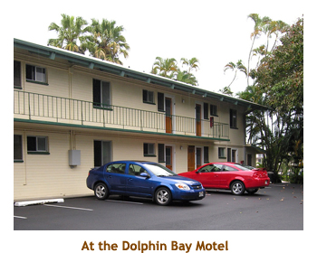
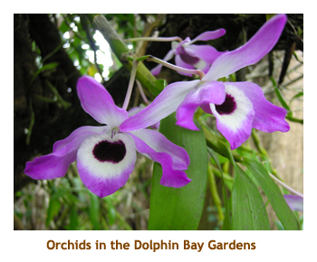
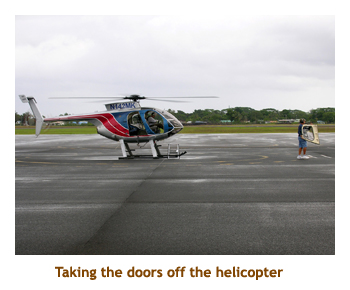
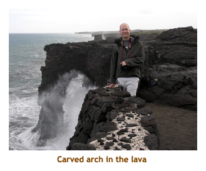
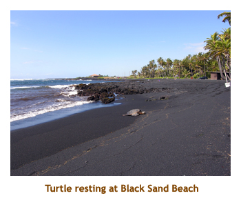
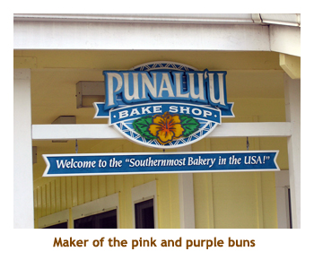
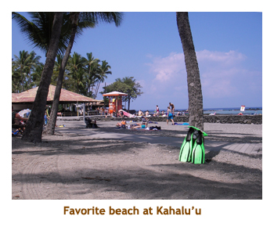
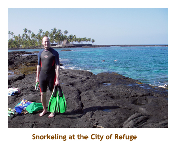
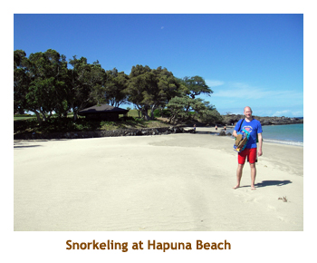
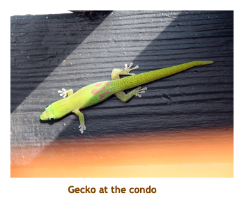

[ Home ] [ Travel ] [ Photography ] [ Pets ] [ Games] [ Rowing] [ Physics ]


Another Visit to the Big Island
Travel
Cruises
Past Cruises (Diaries)
Future Cruises
Rogues Galleries
Land Trips
Diaries (Land Trips)
Hawai'i - Big Island - 04'01
Hawai'i - Maui - 05'02
Hawai'i - Big Island - 04'03
Hawai'i - Kaua'i - 09'04
Hawai'i - Big Island - 04'06
Hawai'i - Maui - 04'06
Mainland China - 05'07
Phoenix, Arizona - 12'07
Greek Isles - 05'08
Hawai'i - Kaua'i - 09'08
Hawai'i - Big Island - 09'09
Hawai'i - Maui - 05'12
Hawai'i - Big Island - 04'13
Ireland - 08'13
Mexico - Cancun 11'13
France/Belgium/Lux 07'15
Hawai'i - Big Island - 05'17
England / Wales - 06'17
Hawai'i - Big Island - 09'19
Photography
Cameras
Underwater
Pets
Tara
Blackie
Whitey
Muffy
Ollie
Rusty
Fluffy
Rufus&Dufus
Games
Rowing
Physics
This was another trip for Mike and I. Marjorie once again didn't have enough holidays to join us. Our trip was actually 2 weeks long, spanning the Big Island and Maui. I've written them up as separate trips. For our week on the Big Island, we decided that we wanted to do 2 nights in Hilo and 5 nights in Kona. That way we could spend a full day at the Volcano Park without worrying about the long drive to the other side of the island.
We flew down Harmony Airlines (direct from Calgary!) and had a wonderful flight. The flight was direct to Hilo. We arrived early afternoon and picked up our rental card (a red Cobalt). It was nice arriving in Hilo as we did not have to traverse the island from Kona.
We arrived in Hilo well before dark, so it was easy to find our hotel - the Dolphin Bay Hotel. We had stayed there on our previous trip, so were familiar with the location. We headed off to bed, ready for an early start to the volcano for the day.
 Today was a cloudy, rainy day. As a treat for Mike (and me), I had booked an early "doors off" helicopter ride over the volcano. The low cloud and rain made it very cool in the helicopter. Our photos weren't too good either as we needed sunshine to brighten things up. We flew north of Hilo over the water falls and rainforest, and then headed south to the volcano. A combination of few visible lava flows and the cloudy weather made the vocano viewing less than we had hoped for, but it was still a great experience.
After landing, we drove south to the volcano park. We had lunch at the Lava Rock Cafe (just like last time). Then we headed down the Chain of Craters Road to the lava flow. The temperature up around the Kilauea Crater was about 58 degrees and misty. Once we were down at ocean level, the temperature was back up to 75 degrees or so. What a difference 1000 feet can make!


The next day we headed around the southern tip of the island on our way to the Kona side. Along the way we had to stop at two of our favorite places - the black sand beach (for the turtles) and the Punalu'u Bake Shop (for the cinnamon buns). It was a beautiful day for the drive. The eastern portion of the drive is a nice highway with very little traffic. However, the western portion is a twisty, two lane road with lots of traffic. Most of the time for the travel is spent on the western portion. When we got to the condo (the Casa De Emdeko, where we stayed before), there was no lockbox on the door. It turned out that the owner had switched management companies and we had not been notified. Luckily a security guy at the condo figured out the problem and directed us to the new management company to pick up the keys. Whew!


The rest of the holiday was spent touring around the area and trying a number of snorkeling beaches. Our guide for snorkeling is the Snorkel Hawai'i book by Judy and Mel Malinowski. Once again we had a great experience at Kahalu'u Beach Park, just along Ali'i Drive. Shallow and protected, it provides closeup viewing of many species of fish as well as green sea turtles. We met a Calgary friend and his family from Nortel at the beach. This was their first trip to Hawai'i, and I had lent them some guide books prior to leaving on the trip. We did a number of good restaurants, including (finally) making it to Merriman's in Kamuela. We also did a couple of trips to Teshima's for excellent Japanese food.




At the end of the week, it was time to pack up and move to Maui. You can find the Maui portion of the trip in a separate diary.